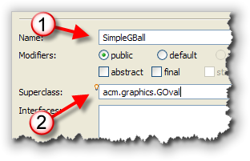

Classification is one of the
primary mechanisms that we
use to understand the natural world around us. Starting
as infants we begin to recognize the difference between
categories like food, toys, pets, and people.
 As we mature,
we learn to divide these general categories or classes into
subcategories like siblings and parents, vegetables and
dessert.
As we mature,
we learn to divide these general categories or classes into
subcategories like siblings and parents, vegetables and
dessert.
When faced with a new object, we try to understand it by fitting it into the categories with which we’re acquainted:
- Does it taste good? Perhaps it’s dessert.
- Is it soft and fuzzy? Maybe it’s a pet.
- Otherwise, it’s most certainly a toy of some sort!
Encapsulation—the specification of attributes and behavior as a single entity—allows us to build on this understanding of the natural world as we create software. By creating classes and objects that model categories in the "real world," we have confidence that our software solutions closely track the problems we are trying to solve.
Once we've learned how to design our own classes, instead of thinking in terms of computer files and variables, our programs can be expressed in terms of Customers, Invoices, and Products.
Introducing Inheritance
 Inheritance adds to encapsulation the ability to express
relationships between classes. Think back to the categories
"desserts" and "vegetables." Cherry pie and broccoli are both,
at least arguably, edible items; for humans, they belong to
the food class.
Inheritance adds to encapsulation the ability to express
relationships between classes. Think back to the categories
"desserts" and "vegetables." Cherry pie and broccoli are both,
at least arguably, edible items; for humans, they belong to
the food class.
Yet most of us recognize that, in addition to belonging to the food class, cherry pie is a kind of dessert, whereas broccoli is a kind of vegetable. Both desert and vegetable represent subcategories of foods.
If you ponder this for a moment, you’ll realize that you can draw three conclusions:
- Although both cherry pie and broccoli are kinds of food, the food class itself consists of, thankfully, more than just these two items. Cherry pie and broccoli are just two small subsets of all possible food types. Thus, the relationship between the food class and the cherry pie class is one of superset (food) and subset (cherry pie). In object-oriented terminology, we call this the superclass-subclass relationship.
 Superclasses and subclasses can be arranged in a
hierarchy, with one superclass divided into
numerous subclasses, and each subclass divided into
more specialized kinds of subclasses. That’s what we
find with the food class.
Superclasses and subclasses can be arranged in a
hierarchy, with one superclass divided into
numerous subclasses, and each subclass divided into
more specialized kinds of subclasses. That’s what we
find with the food class.
It can be divided into desserts, vegetables, soups, salads, and entrees. Each category can be further divided into more specialized kinds of food.
- A classification hierarchy represents an organization based on
generalization and specialization. The superclasses in such
a hierarchy are very general, and their attributes few; the
only thing that a class must do to qualify as food, for
instance, is to provide nutrients.
As you move down the hierarchy, the subclasses become more specialized, and their attributes and behavior become more specific. Thus, although broccoli qualifies as food (it is, after all, digestible), it lacks the necessary qualifications to make it into the dessert class.
 In the last few units, you've
learned how to build and then test your own
user-defined custom classes.
In this unit, we'll take that a little further and you'll
learn how to build more complex classes by extending
and combining classes from the Java and ACM class
libraries. That way, instead of constantly "reinventing the wheel",
you'll be able to build on the work of the programmers who've
gone before you.
In the last few units, you've
learned how to build and then test your own
user-defined custom classes.
In this unit, we'll take that a little further and you'll
learn how to build more complex classes by extending
and combining classes from the Java and ACM class
libraries. That way, instead of constantly "reinventing the wheel",
you'll be able to build on the work of the programmers who've
gone before you.
In this lesson you'll learn:
- about inheritance and the is-a class relationship
- how to extend an existing class to create a new class
- how to create a new class by combining existing types
- how to create new single-value scalar types
We'll start by first looking at two different strategies you can use to create a new component using existing components as a starting point.
Introducing Inheritance
When you create your own new, reusable components, there are really three different strategies you can use:
- You can build your component completely from scratch,
like we did with the various versions of the
Ballclass in Unit 9. - You can combine simpler parts together, such as
a
JLabeland aJTextField, to create a more complex component. - You can extend a more basic component by adding new features or behaviors.
Since you've alread learned how to build a class from scratch, in this lesson we'll take a look at these last two techniques. We'll start by extending an existing component to create a new class that inherits methods and fields from its superclass.
Has-A and Is-A
These two different strategies are used to express two different kinds of "class relationships":
- The has-a relationship, when one class is a combination
of other objects. We can say that a
JLabelobject has-a background color property. In this kind of has-a relationship one component is composed of different parts. ABicycleclass thus may contain two instances of theWheelclass. -
 The is-a relationship, when one class is an extension
or "kind of" another class. The is-a relationship occurs
when members of one class form a subset of another class,
like the Animal, Mammal, Rodent example we discussed back
in Unit 8. This is also called an inheritance
relationship. In the inheritance relationship shown here,
we'd say that a
The is-a relationship, when one class is an extension
or "kind of" another class. The is-a relationship occurs
when members of one class form a subset of another class,
like the Animal, Mammal, Rodent example we discussed back
in Unit 8. This is also called an inheritance
relationship. In the inheritance relationship shown here,
we'd say that a MountainBikeis-aBicycle.
Back in Unit 9 we used the original applet version of a "bouncing
ball" program to develop, step-by-step, a bouncing-ball class;
one that contained constructors, accessors, and mutators, and that
"knew" how to bounce around the screen. The bouncing ball class that
we developed, though, doesn't work inside ACM graphics programs,
because it wasn't a member of the GObject family,
like all of the other ACM graphical objects.
Later in this lesson, we'll create two versions of the bouncing-ball class, both designed to work with ACM graphics programs. One will use inheritance, and one will use composition. Before we do that, though, let's look at how inheritance works in Java.
Inheritance: Syntax and Semantics
 It's really tempting to dive right
in and start by extending some of the ACM classes, making
a new ImageBall or PlayingCard
class, or perhaps fill in some of the missing geometric shapes;
anyone up for a new GNonagon class?
It's really tempting to dive right
in and start by extending some of the ACM classes, making
a new ImageBall or PlayingCard
class, or perhaps fill in some of the missing geometric shapes;
anyone up for a new GNonagon class?
The only problem with that strategy is that inheritance actually introduces quite a few new possiblities into your programs, and each of those possibilities needs to be handled in a very specific way. Starting with a more complex class, even though it might be more interesting, makes it easy to miss some of the details that you really must master to make effective use of the object-oriented technique of inheritance.
So, instead of working with fun stuff, like card games and shooting down aliens, in this lesson I'll return to the old, boring finger-exercises type of examples that let you concentrate on one piece of the inheritance puzzle at a time.
Topic 1: Extending a Class
 When you create a new class using inheritance, you use the
When you create a new class using inheritance, you use the
extends keyword to specify the parent or
superclass when you define the child or subclass.
For our first example, let's look at a simplest possible class
that represents people: the Person class. Then,
we'll create a new kind of Person, the
Student.
To the right is the UML (Unified Modeling Language) class diagram for the two classes we'll start with. You can download the source code for the Java program that contains these classes, Interitance01.java by clicking the link in this sentence.
As we develop these classes,
instead of placing them in their own files, I'll put both classes
in a single file, along with a public test class. That way I
won't have to change the names or projects, since we'll have several
different versions. However, for the versions that you download,
I have changed the names of the classes to Student1
and Person1, so that you can run them all in the same
project, without getting an error.
Here's what you should notice about each of these classes.
The Person Class
 The Person class has a single attribute,
The Person class has a single attribute, name
which is stored as a String. The minus sign preceding
name tells us that the instance variable used to
store this attribute will be marked private.
The class has one mutator, setName() that allows
us to change the name of the Person. There is also
one accessor method, getName() which is a "getter"
method that allows us to read the value of the attribute. The
plus sign appearing before the method says that the method is
public. The void appearing at the
end of the entry is the method return type.
The Student Class
 The Student class is a subclass of
The Student class is a subclass of Person.
The hollow-headed arrow pointing from Student to
Person says that Student inherits
from or (in Java) extends the Person
class.
Student also has one private attribute, the
studentID which will be stored as a long.
To initialize both the student's name and their ID, the class
has a public constructor that takes two paraemters.
The class has an accessor or "getter" method to retrieve the
value stored in the studentID field. There are no
methods to set or change the ID. While a student might change
their name (because of marriage, for instance) they can never
change their student ID.
Inherited Methods and Fields
Let's create an object of the Student class,
and then call some of the methods:

 Notice that when I create the
Notice that when I create the Student object named
steve, I can call the getID() method,
which was defined in the Student class.
However, I can also call the setName()
and getName() methods which were not defined
in Student, but in Person. More
importantly, I'm also able to access the name
field in the Person class if I use these
methods. Why is that?
When we create Student objects, each subclass
object contains all of the attributes and methods
of its superclass. If we were to look at a "logical"
diagram of the student class, it would look something like
that shown here:
 However, (and this is very important), most of the
fields, and some of the methods will not be accessible
to the subclass object, because they were declared
However, (and this is very important), most of the
fields, and some of the methods will not be accessible
to the subclass object, because they were declared
private in the superclass.
So, for instance,
if we were to change the Student constructor
so that it attempted to set the private name
field directly, (instead of using the setName()
method), we'd get an error like this:
 Even though you can't access the
Even though you can't access the private name field
from the subclass, the field is are there nonetheless. You know
that because the inherited setName() and
getName() methods work correctly.
Those methods (and fields) that are not declared private
in the superclass are called inherited methods (and fields).
An object may use its inherited methods and fields without any
further qualification, exactly as if they were defined inside
the object's own class (as I've done in the example here.)
Specialization and Extension
Normally, a subclass extends an existing
class by adding additional fields or methods. That is
because logically, a subclass represents specialization.
The Elephant class represents a specialized form of
Mammal, and the Mammal class represents
a specialized form of Animal.
In our case, the Student class added one new
field and one new method, along with a constructor.
Implicit Inheritance
Every class without an explicit extends clause
implicitly inherits from the Java root class
named Object. Just as with explicit inheritance,
the implicit subclass (Person) inherits
several fields and methods from its superclass.
One of these is the toString() method. Even though
neither the Person nor the Student
class have not defined a toString() method, we can
call the toString() method inherited from
the Object class like this:
 Of course, as you can see, the results are not very satisfying.
The
Of course, as you can see, the results are not very satisfying.
The Object version of toString() just
prints out the name of the class followed by the memory
address where the actual object is located in memory.
The example shown here explicitly calls
the inherited toString() method. The code can be
made even simpler, like this:
 When you use any kind of object with string concatenation like
I've done here, Java implicitly call's the object's
When you use any kind of object with string concatenation like
I've done here, Java implicitly call's the object's
toString() method to perform the concatenation.
Of course, as you can see, in this case the inherited method really doesn't work the way we'd like. Which brings us to the second inheritance topic: method overriding.
Topic 2: Method Overriding
When an inherited method doesn't do exactly what you want, you can write a replacement method. This is called overriding the method. The new version of the method can either completely replace the existing version, or you can add some new actions to the original. (You can't however, just use some of the existing behavior.)
To illustrate this, we'll add toString() methods
to both of our demo classes. You can find the finished code
in Inherit02.java,
which you can download by clicking the link in this sentence.
The first change just adds toString() to the
Person class like this:
 When you override a method like
When you override a method like toString() you must:
- Use exactly the same number and type of
parameters as the original method in the superclass. There
are no conversions between
intanddoublefor instance. - Return exactly the same type as the original method.
- Use an access specifier that is at least as
permissive as the superclass method. In other words, you can't
override a
publicmethod with aprivatemethod.
With this new version of toString() our Inherit02
sample code looks like this when it runs:
 Note that the variable
Note that the variable pete prints out the name as
you'd expect (since pete is a Person
object). The variable steve also uses the
new overridden toString() method defined in Person,
instead of the original version defined in the Object
class.
When we replaced toString() for the Person
class, we also replaced it for all of its subclasses.
Writing Student toString()
Now, let's override toString() in the Student
class as well. Here's a first attempt:
 As you can see, though, the field
As you can see, though, the field name is not
accessible. This is the same problem we had earlier trying
to access name from the Student constructor.
There we were able to get around the problem by using the inherited
getName() accessor method, and we can do the same thing
here, like this:
 While this works, though, it doesn't take advantage of the fact
that we've already written the
While this works, though, it doesn't take advantage of the fact
that we've already written the toString()
code for the Person class. Essentially, in the
Student version of toString(), we're
writing exactly the same code again.
Isn't there some way we can run the original version of the
toString() method, and just add on the
new parts we want, like printing the student ID? Isn't there
someway we can combine inherited and overridden methods?
Yes, there is.
Calling Superclass Methods
As you saw earlier, the Student class automatically
inherited both the getName() and the
toString() methods from the Person
class. When we created a Student object, we could
use both of those methods just as if they were defined in the
student class.
Furthermore, when we defined new methods in the Student
class, we could call those inherited methods (such as
getName()), just as if they were defined inside
the Student class.
Let's see if we can put that to work by calling the inherited
version of toString(), which already prints the
object's name, from inside the new overridden toString()
method. Here's what that looks like, and here's what happens:
 The good news is that doing this is not syntactically
incorrect. The bad news is that your program blows up with
a
The good news is that doing this is not syntactically
incorrect. The bad news is that your program blows up with
a StackOverflowError when you try to run it.
The reason your program crashes is because when you call the
toString() method from inside a class that has
a definition for a toString() method, then the
overridden or Student version is used; it has
replaced the inherited Person version.
You are, in effect, calling the Student version
of toString() from inside itself. This
is called recursion and while it can be a powerful
problem-solving technique, doing it accidentally like this
usually results in a program crash.
The super Modifier
This problem is similar to the one we encountered when we
had instance variables and local variables that both had
the same name. When that happened, we were able to use the
special identifier named this to differentiate
between the two variables.
In this case we have an inherited superclass method named
toString() and an overridden subclass method
named toString().
We can differentiate between them by using the special
identifier named super, like this:
 Now, the overriden
Now, the overriden toString() method calls the
superclass toString() method to do a portion of
its work.
Don't confuse method overriding (which is what we're doing here), with method overloading. With overloading, two or more methods have the same name, but different parameter lists. Overloaded methods can exist in the same class or in a subclass. (This is different than C++). Overriding methods can only exist in a subclass and they must have exactly the same parameters and return type as the method that they are replacing.
Topic 3: Inheritance and Constructors
The last thing you'll need to master to work with inheritance is how it affects constructors. You remember that a class constructor must have the same name as the class. That means that when you create a new class, the new class doesn't inherit any of the superclass constructors. Instead, it needs to define new constructors of its own.
To see how that works, let's add two constructors to the
Person class, which currently uses only the
default constructor that is automatically written
by Java, when you don't supply any explicit constructors:
 Both constructors just print a message so we can keep track of
when they've been called. The working constructor uses its
Both constructors just print a message so we can keep track of
when they've been called. The working constructor uses its
String parameter to initialize the name
instance variable in addition to printing a diagnostic message.
I've also added a similar diagnostic message to the
Student class constructor.
The test program creates two objects, one Person and
one Student, and prints out their info, just like
the previous example. When we run the test code in
Inherit03.java (which you can download by clicking the
link in this sentence), you'll see that instead of two constructors,
both Person constructors have been called,
along with the Student constructor:
 Why is that?
Why is that?
Constructor Chaining
When you call a subclass constructor, before the constructor can do any of its work, it first needs to make sure that its superclass constructor has been called. This happens before the first line in the subclass constructor ever runs.
You don't have to do anything special to make this happen.
When your constructor runs, if implicitly calls the no-arg
constructor in the superclass as its first line of code, and that
constructor calls its superclass constructor, and so on,
all the way up to the Object class. This is called
constructor chaining.
So, consider for a second, the Student class
constructor shown here:
 Even though you don't see it in the code,
in reality the following set of commands are run
when the
Even though you don't see it in the code,
in reality the following set of commands are run
when the Student construct is invoked
(after memory has been allocated and all instance variables
have been initialized):
- call the
Objectno-arg constructor - call the
Personno-arg constructor - assign the parameter to the instance variable
- call the
setName()inherited method - print the diagnostic message
That's why we saw three diagnostic messages in the sample program,
when we only created two objects. When we created the Student
object named steve, the Student constructor
first called the no-arg constructor for the Person
class. If the Object class no-arg constructor printed out
diagnostic messages, like our constructors do, then you won't have seen
two of those as well: one for the Student object and
one for the Person object.
Default and No-Arg Constructors
What happens if we remove the no-arg constructor from the
Person class? If you comment it out, you'll see that
it doesn't affect the Person class at all, but the
Student constructor stops working:
 As the Eclipse error message points out, every time you extend a class,
the superclass must:
As the Eclipse error message points out, every time you extend a class,
the superclass must:
- have a no-arg constructor like
Person(), or - have a default constructor which is automatically written if the superclass has no explicit constructors, or
- the subclass (
Studentin this case) must explicitly call another constructor.
That's what we want to look at now. How exactly do you explicitly call a superclass constructor?
Calling super()
You remember when you wrote overloaded constructors in Unit 9, that
you could invoke one constructor from another by using the special
syntax this(). When you use this() to call
another constructor, it needed to appear on the first line of the
method.
With inheritance, instead of calling another, overloaded constructor
in the same class, you can call a constructor in your immediate
superclass. Instead of using this(), you use
super() in a similar manner. As with this(),
super() must appear on the first line of the constructor
body. Of course that means you can use this() or
super(), not both.
Here's how you'd modify the Student constructor to call
the Person(String) constructor, instead of using
the setName() method, as we've done up until now:
 Notice that the
Notice that the setName() method can be removed alltogether
once you do this. This is the normal way to write subclass constructors.
Now, when we run our sample program, instead of implicitly calling the
Person no-arg constructor (which no longer exists), we
explicitly chain to the Person(String) constructor
to initialize the name field:

Well that's it for the boring finger exercises. Let's get back to the fun stuff.
Simple Inheritance

Let's start this lesson by returning to the bouncing ball program, PolarBounce, from the Lesson 8E: Introducing Animation. (You can download the original version by clicking the link in the previous paragraph.) We'll write several different versions of the application, gradually turning it into an object-oriented program that applies the principle of inheritance and composition.
By writing several different versions, you'll come to appreciate how inheritance saves you work by letting you reuse existing, already-debugged code.
The Original PolarBounce
The original version of PolarBounce basically did three things:
- It defined instance variables to represent the ball and it's current state on the screen.
- It initialized each of the instance variables inside
the
init()method. - Inside the
advanceOneFrame()method, it moved theGOvalobject and then checked to see if the ball collided with the side of the canvas.
Our original program also responded to mouse events to change its direction. That's not directly applicable to the current lesson, so we'll leave that for a little later.
The SimpleGBall Class
 For our first sequel to PolarBounce, instead of using a
For our first sequel to PolarBounce, instead of using a
GOval and separate fields or local variables
for the attributes of our bouncing ball, we'll
create our own class to represent our ball, just like
we did with the SimpleBall class in
Lesson 9A: Defining Fields.
As we did back there, to keep confusion to a minimum,
we'll start the simplest class definition possible.
Since our class will be part of the GObject
family, we'll call it SimpleGBall.
The Class "Skeleton"

Create the SimpleGBall class exactly like you
create a regular Java class, except that when you
fill in the Eclipse Class Wizard screen, have it
extend the acm.graphics.GOval
class as shown here!
Here's what the basic code for the SimpleGBall
class should look like. Be sure to add a class comment at the
top as I've done here:
Data Attributes
To define the fields for your class, you have to decide what data elements you'll need to represent objects of the class. If were were defining a Car class, like the illustration shown earlier, we might want to have fields for Serial Number, Color, Engine Size and Body Style.
In our case, we could use a java.awt.Rectangle,
like the original AppletBounce program did. One of the
advantages of object-oriented programming, though, is that it lets
you think in more "natural" terms. Rather than thinking in
terms of rectangles, let's model our ball using:
- radius: how big the ball is.
- location: where the ball is located.
- dx,dy: the velocity of the ball.
- color: the color used to paint the ball.
This doesn't look that much different than the previous example, of course; but there's one major difference:
The data elements are packaged now packaged inside our class, not "lying loose" inside our program.

Here's that "real world" inheritance example from Unit 8.
Suppose that all of the
animals in the world could be lumped together into the class
Animal. If we took all of the animals and divided
them into different groups, we might find that some were
mammals, (which we'd assign to the Mammal class),
some were insects, etc. Each of these groupings would be a
subset of the entire class of Animal.
Such a subset (Mammal, Insect,
Amphibian) is called a subclass, and, as
you might expect, the superset (Animal) is
called the superclass.
This relationship is called an is-a relationship because
if an object belongs to a subclass, (brenda and
jumbo in the Elephant class, for instance),
that object is simultaneously a member of each of all
its ancestor classes as well. Thus, we can say that
Jumbo "is-a" Elephant, but, by virtue of
being an Elephant, he is, simultaneously, a
Mammal and an Animal as well.
Let's use this somewhat artifical inheritance hierarchy to look at the syntax and semantics of inheritance. Once you know how inheritance works, we'll come back and put it to work in a more practical example.
The Syntax of Inheritance
Let's start with the
Animal class shown below. This is an independent class
similar to the ones you wrote in Unit 9, except that it is
probably simpler:

Substitutablility
Because every Elephant is also a
Mammal, any time a Mammal is required,
you can use any kind of Mammal. You can supply an
Elephant to meet the need, if that's what you have.
For instance, this is permissible:
Mammal fred = new Elephant();
as is this:
public void feed(Mammal m)
{
// General Mammal feeder
}
. . .
Elephant jumbo = new Elephant();
feed(jumbo);
You can pass an Elephant to any method that requires
a Mammal, because every Elephant is
a "kind of" Mammal. This is called the
principle of substitutability. You can always substitute
a subclass object when a superclass object is needed.
The reverse is not true, however, you cannot pass a
Mammal object to a method that expects to
get an Elephant. All Elephants are
Mammals, but not all Mammals are
Elephants. This, therefore, is illegal:
public void feed(Elephant e)
{
// Specialized Elephant feeder
}
. . .
Mammal tom = new Mammal();
feed(tom); // OOPS! tom is not an Elephant!
Single Inheritance
There is one last thing you should note about Java's inheritance model. Each subclass can have only one immediate superclass. This is called single inheritance. Because of this, you cannot create a subclass that combines the characteristics of two classes using inheritance. Such a facility is called multiple inheritance.
Java has other facilities for achieving this goal, however. You can use composition, or another Java feature called the interface.
Hands-on Inheritance: Creating a New Widget Class
For the rest of this lesson, we'll explore Java's inheritance facilities by using them to create our own graphical component, that fits into the Java "family", so to speak. Back in Section 4.5 of your text, you created graphical objects, but they really weren't part of Java's component hierarchy, and were treated differently than Java's built-in buttons and labels.
The class that we'll create, the Dot, is very similar to the
Circle class on page 182. The big difference is that
Dot objects will inherit all of the methods
and fields from the Component class, so the
Dot class will be both simpler than the
Circle, yet have more features.
As always, you'll learn more if you break out the keyboard and compiler, and type along.
Canvas and Component
Creating a subclass is easy. You've been doing it since you wrote your first program. For this project, however, you're going to be creating two new classes.
- One class,
TestDotswill extend theAppletclass, as all of your previous applets have done. You'll use this class as a "test-bed" or "test-harness" for your new widget class. - Your second class,
Dot, will extend one of the built-in classes, the class namedComponent.
In the original version of Java, (1.0), there was only one way to
do this: by using the Canvas class. The
Canvas class provides,...well, a "blank canvas",
that you can extend to create your own widgets. The advantages
of using Canvas as the basis for your own
widgets are:
- Your custom widgets will work in Java 1.0 as well as Java 1.1 browsers.
- The code is slightly simpler than that required by the alternative methods.
There are disadvantages as well. Each of your
Canvas-based components uses a native "window peer".
It is because of the use of these native peers that
Canvas-based widgets are called "heavyweight"
components.
The disadvantages of using heavyweight components are:
- Your O/S normally has a limited number of window peers, so using them for buttons and labels depletes system resources.
- The heavyweight window peer is opaque, so all of your controls must appear to be rectangular.
In Java 1.1 and later, you can also directly extend the
Component class to create "lightweight" components.
Lightweight components do not require a native peer, and so
use fewer resources (theoretically) than heavyweights.
Lightweight components can also contain transparent regions, so
you can create round or irregularly shaped components. Our
Dot objects will be circular, that's why we'll use
Component instead of Canvas as
our Dot superclass.
Step 1: The Test Harness
Start up your Eclipse, and create a new Java class. Whenever I have to create a new "standalone" class, I always create a test-harness first. We'll follow that here. Instead of starting with the Dot class, we'll create a program that uses the Dot class.
Use java.applet.Applet as the base class, and
then use the code shown here:
 Notice that this is a simple applet that works like this:
Notice that this is a simple applet that works like this:
-
To start out, I've set the background to yellow, and the
layout manager to null. This will make it easier to check our
sizing, positioning, and painting methods, when create the
Dotclass. I've also created a random number generator, and two local variables,widthandheightthat I'll use to position each of myDotobjects, later in the program. - The loop at the end of the
init()method repeats ten times, and each time through, it creates aDotobject, using the default constructor. - Because our
Dotis-aComponent, unlike theCircleclass of Chapter 4, we can use theComponentclassadd()method to add eachDotto the applet. - Because every
Dotis-aComponent, we can also use the inheritedsetLocation()andsetForeground()methods, with out doing any extra work in theDotclass. Like all inherited methods, we get the extra functionality, "for free". - Finally, we can add new functionality. The
Componentclass knows nothing about a radius, but we'll give ourDotclass a specializedsetRadius()method, which we'll call from line 40.
Now, because the Dot class does not yet exist, your code
will not compile at this point. You can download
TestDots.java by clicking the hyperlink in this
sentence.
Step 2 : The New Class
Now, create a new Java class called
Dot.java,
and add the new class definition shown here:
 Note the following things about this code:
Note the following things about this code:
- We only import
java.awtnotjava.appletlike we've done for our applets. The new class then extendsComponent, notApplet - There is an instance variable,
radius, which we set to a default value of 10. We also added a mutator method,setRadius(), which allows us to change the value of the radius. - Finally, there is a
paint()method, just like those you've used in your applets, that draws the bounds of the dot, based on its size.

Compile and Run
Once you've completed this second file, save both TestDots.java and Dots.java. Both files should compile without problems, and then run TestDots as an applet.
What do you see? Why, do you suppose?
The Dot class is fairly Spartan; it
doesn't look like there's a lot of room for something to
go wrong, but even the simple paint() method doesn't
appear to be working. Note, though, that even though your
dots appear "invisible", the Dot class actually
"knows" how to do quite a few things, despite the inauspicious
start. Notice that you didn't get any error messages with
the add(), setLocation, or
setForeground() messages.
Let's tackle the "invisibility" problem first.
How Big is that Dot?
Even though we set the radius of each of our Dot objects,
we really haven't considered how our Dot class "fits in"
with all of the other components. When you extend a class, you need
to carefully examine each of your ancestor classes and see how your
new fields and methods affect them.
In this case, the problem is quite simple; we're changing our Dot's
radius, be we aren't passing that information on to the rest of
the family. We can fix that by calling the inherited setSize()
and setPreferredSize() methods whenever we change our
object's radius.
Here's the modified setRadius() method:
 and here's a constructor, which makes sure our objects start out
life with the correct size as well. In addition, I've set the default
foreground and background color of each
and here's a constructor, which makes sure our objects start out
life with the correct size as well. In addition, I've set the default
foreground and background color of each Dot also.

 You can examine the modified source code for this version of
Dot.java by clicking the link in this sentence.
You can examine the modified source code for this version of
Dot.java by clicking the link in this sentence.
Save the code and run TestDots again, and you'll see that this time, the dots are spread out across your applet, just like the picture shown at the right.
Lessons Learned
There are three lessons we can draw from this program:
- We can create
Dotvariables and objects just like we can createLabelorButtonvariables and objects:Label myLabel = new Label("Hi Mom"); // OK
To add more functionality, we could add more constructors or methods.
Dot aDot = new Dot(); // also OK - A
Dotobject is-aComponent, just like the built-in components that come with the Java 2 Platform. We can add them to the surface of our applets just like we can addButtonorLabelobjects:this.add(myLabel);
this.add(aDot); - We can automatically use the
Componentmethods,setForeground()andsetLocation()without doing any extra work at all. TheDotclass inherits them "for free."myLabel.setBackground(Color.red);
aDot.setBackground(Color.red);
Of course, unlike Button or Choice objects,
the Dot is a pretty poor Widget. Sure, we can change
its size and color, but, like the Label class, it more or
less just sits there.
Composite Objects
Inheritance, which you first met in Unit 2, is a simple and powerful way to reuse and extend existing software components. As you'll see in the next Unit, inheritance lets you define your own version of existing classes, customized for your special needs.
Suppose that your corporate policy requires that all applications use 14-point TextFields and 18-point bold Labels. Using inheritance, you can simply create a pair of new classes by extending the TextField and Label classes, and avoid the extra work of sending the setFont() message to every TextField and Label object in your entire application.
Inheritance isn't the right solution for every situation, however. What
if you need a component that combines both a Label and a TextField
object? Inheritance doesn't help in this situation. If you try to write
| public class LabeledTextField
extends Label, TextField { } |
Java goes ballistic. It won't even compile your code. Java's hard-and-fast rule is that each class can extend only a single superclass.
Fortunately, there is a simple solution. You can bundle both your Label and your TextField together in a single class, making each of them fields. This technique is called composition.
The idea of a composition relationship is really quite simple: In the composition relationship, an object is composed of other objects, which are its "parts." That's why it's called a HASA relationship, because we say:
- A car has a motor, or
- A bicycle has a seat, or
- A computer has a CPU
The LTextField Class
For the rest of this lesson, we're going to use composition to build a
labeled text field class in several stages. Our first few attempts won't
be very impressive, but stick with it, and you'll be rewarded.
By themselves, text fields are not very useful. The purpose of a text field is to get input from your users. But, without a label, your users don't know what information to put into each field. If you look at any "business style" application, almost every text field has a label attached to it.
Let's see if we can combine two of Java's built-in AWT classes, the TextField class and the Label class, to create a new labeled text field. For right now, we'll use an applet to "hold" the parts together.
As we work through the example, it will help if you are able to follow along on your own computer.
The LTextField1 Class
Here are the steps to follow:
- Create a new applet named LTextField1. Remember that this must be in a file named LTextField1.java, and contain a single public class named LTextField1 that extends the Applet class.
- Remember to import the java.awt package and the java.applet package.
- Add two fields: a Label field called theLabel, and a TextField called theText. You don't have to initialize either field.
- Add an init() method to initialize both of your fields:
- Initialize your Label to say "Name:". Make the Label right aligned.
- Initialize your TextField with a width of 40.
- Add both fields to your applet, using the add() method
- Create LTextField1.html. Set HEIGHT to 50 and WIDTH to 400.


Using LTextField1 Objects
Since LTextField1 is an applet, it's common for use to think of
it as a "program." But, Java really doesn't have "programs" like other
programming languages. All Java has is classes and objects.
When you load LTextField1.html into appletviewer, what appletviewer does is to create an LTextField1 object, and then call its init() method. If the appletviewer program can create an LTextField1 object and start it running, perhaps other classes could contain LTextField1 objects as well.
Let's see by creating an applet that uses LTextField1 objects. As with the previous section, you'll learn more if you follow along instead of just reading.
Here are the steps you should follow:
- Create a program that will use LTextField1 objects. Call the applet User1, and extend Applet. Make sure User1.java is in the same directory as LTextField1.class
- Add two LTextField1 objects as fields inside the User1 class. You can name them first and second. Initialize them "in place" using new LTextField1().
- Add an init() method to User1. Inside your init() method use add() to put both first and second on to the surface of the applet.
- Create the User1.html file that loads User1. Set the HEIGHT to 200 and the WIDTH to 400.
![The User1 applet. [Fields do not appear]](user1_1.gif)
Fixing User1
If you read back over the description of how appletviewer or your
Web browser runs your applet, you might notice that the User1 class
is missing one of the steps. Although appletviewer is sending the
init()
message to the User1 object, the User1 object is failing
to send the init() message to its two LTextField objects.
Remedy that by adding the following two lines to the User1 init()
method:
| public void init()
{ first.init(); second.init(); add(first); add(second); } |
Recompile User1.java, and then rerun User1.html in appletviewer. You should see something that looks like this. Go ahead and resize it to your heart's content.

What Have You Learned?
You should now be convinced that applets are objects, just like Button
objects or Label objects. You should also be convinced that, if
you have an object, you can embed that object as a field inside a class.
As far as the LTextField1 class itself, it's really not all that useful. Here are just a few of its shortcomings:
- Because the browser only calls the init() method on the applet it loads, when you use an LTextField1 object, you have to send it the init() message. Other object fields don't require this, so why should the LTextField1 class?
- The LTextField1 class is not customizable. Every LTextField1 object is always labeled "Name." That's like having a Label class that always says "Hi Mom." It's occassionally useful, but lacks universal applicability.
- The LTextField1 class can't do much. It doesn't repsond to many messages. You can't, for instance, change the text by sending one of your LTextField1 objects the getText() or setText() message.
Improving LTextField1
The best way to fix LTextField1 is to "design it by using it."
Ask yourself the question "How would I use an ideal LTextField object?"
Your answers will give you some ideas about how the LTextField class
should
work.
Here are the answers that I came up with. I want to be able to:
- Specify both the text to be used in the Label part and a width to be used for the TextField part, like this:
| LTextField name = new LTextField("Name:", 30); |
- Have a built-in or default value for the width, so I wouldn't have to specify it if I only wanted to specify the Label portion like this:
| LTextField ssn = new LTextField("SocSec#"); |
- Finally, I'd like to be able to just specify the width of the TextField portion, and have the Label portion default to an empty Label like this:
| LTextField addr2 = new LTextField(35); |
[Of course, I could just use a TextField in this case, but then I'd lose any of the other great improvements I plan on adding to the LTextField class].
 We can divide user-defined types into
types that contain a
single value, called scalar types, and types that combine
multiple data items into a larger unit, which are generally
known as structured types.
We can divide user-defined types into
types that contain a
single value, called scalar types, and types that combine
multiple data items into a larger unit, which are generally
known as structured types.
The Weekday user-defined type picture to the right
is an example of a scalar type that contains only a
single simple value, while the Date type illustrated
here is a structured type, consting of a month, day and
year.
All of the built-in, primitive data types—int, char,
boolean and double—are scalar
data types. Java's class types, such as String,
are structured types.
In addition to the built-in primitive types, Java lets you define your own scalar type, called an enumerated type. Let's look at a situation where having your own user-defined scalar types like this would be really useful.
The Need for Enumerated Types
Do you remember how to create a font? You use one of the
Font constructors, like this example from
Unit 7:
 When you call the
When you call the Font constructor, you pass three
parameters. The last two parameters, style and
size are both of type int.
When you use this constructor, instead of passing an arbitrary
int for the style, you'll use one of the predefined
Font class constants, like Font.PLAIN
or Font.BOLD. That causes two problems, however:
- Because both the second and third parameter are type
int, the compiler can't warn you if you accidentally switch the order of the parameters, like this:
Font bigFont = new Font("Monospaced", 36, Font.BOLD);
- You don't even get a runtime error, like you do if
you pass an "out of range" int to the
Colorconstructor. All you get is itsy-bitsy font in an unknown style. (That's because the actual value used forFont.BOLDis simply the integer 1. (Font.PLAINis the value 0, whileFont.ITALICis the value 2). When we pass 64 to the second (style) parameter, it's simply ignored, since it is a validintvalue.
Things would be a whole lot better if we could rewrite the
Font constructor so that the second parameter was
a different type entirely, something like this:
Font(String name, FontStyle style, int size)
Then, if we called the constructor with the parameters in the wrong order, the compiler would tell us that we'd made a mistake, just as if we tried to use an integer for the font name.
Unfortunately, it's too late for the Font class,
which was developed before the Java language permitted user-defined
enumerated types. Your programs and classes don't have to
suffer in this way though.
Let's look at the process for creating Java's enum
types.
Creating Enumerated Types
To create your own scalar, enumerated types in Java, you have to do two things:
- Supply a name for your new type in an
enumdefinition. The syntax for this is very similar to aclassdefinition. - Provide a list of all possible values that the type can contain. These are not integer literals, but names that represent the different values a variable could take on.
Let's look at a simple example, one you've already worked with, the Suits in a deck of playing cards.
: the days of the week:An enum type is a type whose fields consist of a fixed set of constants. Common examples include compass directions (values of NORTH, SOUTH, EAST, and WEST) and the days of the week. Because they are constants, the names of an enum type's fields are in uppercase letters. In the Java programming language, you define an enum type by using the enum keyword. For example, you would specify a days-of-the-week enum type as: public enum Day { SUNDAY, MONDAY, TUESDAY, WEDNESDAY, THURSDAY, FRIDAY, SATURDAY } You should use enum types any time you need to represent a fixed set of constants. That includes natural enum types such as the planets in our solar system and data sets where you know all possible values at compile time—for example, the choices on a menu, command line flags, and so on. Here is some code that shows you how to use the Day enum defined above: public class EnumTest { Day day; public EnumTest(Day day) { this.day = day; } public void tellItLikeItIs() { switch (day) { case MONDAY: System.out.println("Mondays are bad."); break; case FRIDAY: System.out.println("Fridays are better."); break; case SATURDAY: case SUNDAY: System.out.println("Weekends are best."); break; default: System.out.println("Midweek days are so-so."); break; } } public static void main(String[] args) { EnumTest firstDay = new EnumTest(Day.MONDAY); firstDay.tellItLikeItIs(); EnumTest thirdDay = new EnumTest(Day.WEDNESDAY); thirdDay.tellItLikeItIs(); EnumTest fifthDay = new EnumTest(Day.FRIDAY); fifthDay.tellItLikeItIs(); EnumTest sixthDay = new EnumTest(Day.SATURDAY); sixthDay.tellItLikeItIs(); EnumTest seventhDay = new EnumTest(Day.SUNDAY); seventhDay.tellItLikeItIs(); } } The output is: Mondays are bad. Midweek days are so-so. Fridays are better. Weekends are best. Weekends are best. Java programming language enum types are much more powerful than their counterparts in other languages. The enum declaration defines a class (called an enum type). The enum class body can include methods and other fields. The compiler automatically adds some special methods when it creates an enum. For example, they have a static values method that returns an array containing all of the values of the enum in the order they are declared. This method is commonly used in combination with the for-each construct to iterate over the values of an enum type. For example, this code from the Planet class example below iterates over all the planets in the solar system. for (Planet p : Planet.values()) { System.out.printf("Your weight on %s is %f%n", p, p.surfaceWeight(mass)); } Note: All enums implicitly extend java.lang.Enum. Since Java does not support multiple inheritance, an enum cannot extend anything else. In the following example, Planet is an enum type that represents the planets in the solar system. They are defined with constant mass and radius properties. Each enum constant is declared with values for the mass and radius parameters. These values are passed to the constructor when the constant is created. Java requires that the constants be defined first, prior to any fields or methods. Also, when there are fields and methods, the list of enum constants must end with a semicolon. Note: The constructor for an enum type must be package-private or private access. It automatically creates the constants that are defined at the beginning of the enum body. You cannot invoke an enum constructor yourself. In addition to its properties and constructor, Planet has methods that allow you to retrieve the surface gravity and weight of an object on each planet. Here is a sample program that takes your weight on earth (in any unit) and calculates and prints your weight on all of the planets (in the same unit): public enum Planet { MERCURY (3.303e+23, 2.4397e6), VENUS (4.869e+24, 6.0518e6), EARTH (5.976e+24, 6.37814e6), MARS (6.421e+23, 3.3972e6), JUPITER (1.9e+27, 7.1492e7), SATURN (5.688e+26, 6.0268e7), URANUS (8.686e+25, 2.5559e7), NEPTUNE (1.024e+26, 2.4746e7); private final double mass; // in kilograms private final double radius; // in meters Planet(double mass, double radius) { this.mass = mass; this.radius = radius; } private double mass() { return mass; } private double radius() { return radius; } // universal gravitational constant (m3 kg-1 s-2) public static final double G = 6.67300E-11; double surfaceGravity() { return G * mass / (radius * radius); } double surfaceWeight(double otherMass) { return otherMass * surfaceGravity(); } public static void main(String[] args) { double earthWeight = Double.parseDouble(args[0]); double mass = earthWeight/EARTH.surfaceGravity(); for (Planet p : Planet.values()) System.out.printf("Your weight on %s is %f%n", p, p.surfaceWeight(mass)); } } If you run Planet.class from the command line with an argument of 175, you get this output: $ java Planet 175 Your weight on MERCURY is 66.107583 Your weight on VENUS is 158.374842 Your weight on EARTH is 175.000000 Your weight on MARS is 66.279007 Your weight on JUPITER is 442.847567 Your weight on SATURN is 186.552719 Your weight on URANUS is 158.397260 Your weight on NEPTUNE is 199.207413
Creating Variables
Assigning Values
Flow of Control
Input and Output
Advanced Enumerated Types
Constructors and Secondary Values
Additional Methods
Coming Up ...
In the next lesson, we'll liven things up a bit by making our Dot
"mouse-sensitive", so that we can drag it around the screen or
have it change colors when we hover over it with the mouse.
To do that, we'll need to learn a little about abstract classes and interfaces. Abstract classes are covered on page 455 in your textbook, and interfaces are covered on page 308. While you'll find more information in those sections, I won't expect you to know more on these topics than what I present in the next lesson.